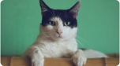

Seriam os gatos astronautas?
Os gatos são animais fascinantes e cercados de mistérios. De temperamento independente e misterioso, esses
felinos são conhecidos por sua agilidade, elegância e um comportamento muitas vezes imprevisível. Contudo,
recentemente, uma teoria tem ganhado espaço na internet e entre teóricos de conspiração: seriam os gatos
astronautas?
A teoria sugere que os gatos não são animais terrestres, mas sim seres extraterrestres enviados para
realizar
uma missão específica em nosso planeta. Há relatos históricos que apontam para o fato de que os gatos eram
considerados seres sagrados em diferentes culturas e até mesmo associados a figuras divinas. Isso poderia
indicar que os gatos têm uma origem muito mais mística do que se pensava anteriormente.
Além disso, há teóricos que acreditam que os felinos possuem habilidades telepáticas e são capazes de se
comunicar com outras espécies alienígenas. Essa crença baseia-se em relatos de pessoas que afirmam terem
visto
gatos reagindo a estímulos que não são perceptíveis aos seres humanos, ou até mesmo se comportando de
maneira
incomum durante eventos astronômicos, como uma aurora boreal. Esses e outros indícios foram interpretados
como
sinais de que os gatos seriam seres interplanetários.
Artigos Relacionados

Sábado Preguiçoso
Descubra atividades
interessantes para fazer com seu pet durante os finais de semana.
interessantes para fazer com seu pet durante os finais de semana.

Balaio de gatos
Como evitar confusões entre seus gatíneos e acostumá-los desde filhotes.

Cartela de cores
Seu gato é inverno intenso? Verão profundo? Descubra as cores que mais combinam com seu bichano.

Os gatos sentem frio?
Preparem-se para a frente fria que vem para o país da melhor maneira possível.

Conheça o Moacir
Moacir é o gatinho da semana do nosso blog. Venha conhecer sua história de superação.